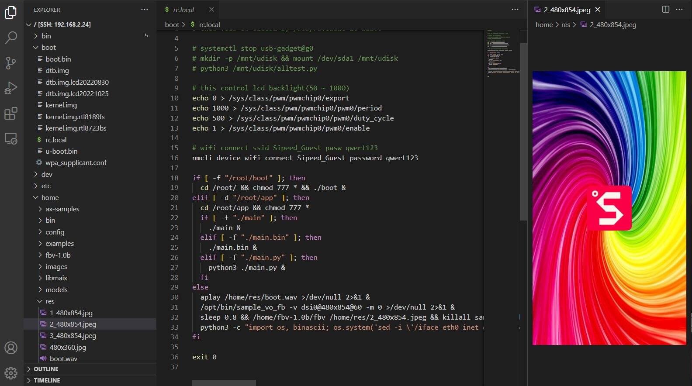

English
EnglishMaix-III AXera-Pi SDK development
Update history
| Date | Version | Author | Update content |
|---|---|---|---|
| 2023-02-12 | v0.1 | wonder |
|
Before reading, it's necessary to know basic usage about
gccandmake.
Preparation
We have told basic operation like burning system and using AXera-Pi in previous article, which help you know how to use AXera-Pi.
For embedded linux, we usually use cross-compile technology to compile out the application for target linux device.
A cross compiler is a compiler capable of creating executable code for a platform other than the one on which the compiler is running. For example, a cross compiler executes on machine X and produces machine code for machine Y.
Normally our computer have better performance than target embedded linux device, compiling the executable on our computer, then run the application on target embedded linux device. This saves more time than compiling and running on target embedded linux device.
For example, ax-sample takes more than 10 minutes to be compiled on AXera-Pi, but it takes less than one minute on your computer.
Above all, for embedded development, coree-compile technology is common and it's necessary to know about this if you want to save your time.
Transfer files
Compiling out the application on our computer, we need send the application to AXera-Pi.
SSH(Secure Shell) enables secure system administration and file transfers over insecure networks.Serialapplication tool is OK to transfer files but it's too slow.
Transfer file with SSH
There are many good SSH application on Windows, here we use Mobaxterm to login AXera-Pi and Transfer file.
Besides, Vscode is also a good idea for transferring file. Install the Remote - SSH and Remote Explorer extensions, then login to AXera-Pi via vscode SSH.

Transfer file with scp
scp means ssh + cp.
Here is the command to transfer file.
scp [option] /path/to/source/file user@server-ip:/path/to/destination/directory
/path/to/source/fileTarget file/folder sent from host to deviceuser@server-ip: Remote target device IP address./path/to/destination/directoryTarget device directory to receive the file/folder
Use card reader
Because of different file system, it's only suggested to use this way if operating system of your computer is Linux.
Transfer file with UART
For linux users, install lrzsz first (sudo apt-git install lrzsz) and use it to finish this
Windows user can use Mobaxterm to transfer file between computer and AXera-Pi via USB-UART connection.
Compile on AXera-Pi
Here we tell how to compile application on AXera-Pi.
Because serial port connector is slow and can be only opened by only one application at one time, we usually login to AXera-Pi by SSH, which we can open many terminals and enter different commands in different ssh terminal at the same time.
Vscode remote
We have told how to login to AXera-Pi via SSH with vscode, login to AXera-Pi by Vscode first, make sure not install C/C++ extension of vscode on AXera-Pi, this extension may close SSH connection.
Click ① and ② to open a SSH connection.
Here we take 192.168.233.1 IP address as example, make sure not forget add username root at first.
root@IP_address
Choose platform Linux and Continue.
Eenter password root to login
Succeed logining to AXera-Pi.
Click Open Folder to see your AXera-Pi directory structure.
Use command Ctrl + Shift + ` to new a terminal, run following command to compile libmiax application.
Example compiling command:
cd /home/libmaix/examples/axpi/ # Open source code directory
python3 project.py build # Compile the project
fbon # Enable screen control
./dist/start_app.sh # Run compiled out application
Running the commands above, screen displays camera content, use Ctrl + c to stop this application if you want to do other task.
Mobaxterm
Using Mobaxtern to login AXera-Pi is a good idea for windows user.
Compile libmaix example on AXera-Pi:
Cross compiling on computer
We compile out the application for AXera-Pi on our computer first.
AXera-Pi is based on Cortex-A7 arm architecture, while normally our computer is based on x86-64 architecture, these two different architectures are based on different instruction set.
The binary executable program normally can not be executed on the same OS if the cpu architecture is not the same because different architecture means different instruction set.
We can install the compiler for arm architecture on our computer, compiled by this compiler, we get the program which can execute on arm architecture device like AXera-Pi.
Here we compile the program based on ubuntu, then send the compiled program to AXera-Pi and run on it.
Install the compiler for AXera-Pi first.
sudo apt install gcc-arm-linux-gnueabihf
Run following command to check your installation.
arm-linux-gnueabihf-gcc
The result should be as following.
New a C file named cross_test.c, and compile it by arm-linux-gnueabihf-gcc. The content of the C file like this:
#include <stdio.h>
int main(){
printf("Hello, AxPi!\n");
return 0;
}
Then use following command to compile the C file.
arm-linux-gnueabihf-gcc -o test cross_test.c -static
Then we get the executable file named test on our computer, and if we run ./test, it says Exec format error. Check file format of test, we can see it's ELF 32-bit LSB executable, ARM, EABI5
So it can only be executed on Axera-Pi, sending the test executable file to AxPi, and on Axera-Pi this program works well.
csp test root@192.168.233.1:/home
By this command, we succeed upload the test executable file to Axera-Pi via rndis protocol by scp command. And note that the password requirement of running command above is root.
Then we can run test executable file on Axera-Pi.
We finish cross-compile.
SDK Repositories
Here are repositories for AXera-Pi, check them if you need.
libmaix
libmaix is unified embedded development environment come by SIPEED, includes camera, screen, vision, image processing and pipelines-related deployment examples, is suitable for those who want to learn embedded Linux.
ax-sample
ax-sample includes typical AI models provided by Axera for development, evaluation and verification, those who are good at AI development or want to test these models can have a try, and these are not involved with peripherals.
axpi_bsp_sdk
axpi_bsp_sdk is the bsp development package for business usage. It's the original development package for this chip, containing components like uboot, linux, msp, sample, rtsp, ipcdemo, and this is progressively open source, you can get these codes for commercial evaluation, such as ipcdemo, but normally these codes are complex and highly coupled, those who are experienced enough and want to use this board for business cooperation can try this.
ax-pipeline
ax-pipeline is provided by Axera. With m3axpi, this project is used for people to know the usages of ISP, image processing, NPU, codec and display, which is convenient for developers to quickly evaluate and develop their own multimedia applications.
SDK usage
There are guides in each SDK Repositories. Here we tells how to build the program for AXera-Pi with SDK Repositories.
To begin this, we need install git, cmake first.
libmaix
Get SDK
git clone https://github.com/sipeed/libmaix.git --recursive
Compile SDK
We have said that we can compile on AXera-Pi or cross-compile on our computer and send to AXera-Pi.
ax-samples
Repository: Click me
This SDK has been set in /home path of AXera-Pi, read ax-samples for more help.
cd /home/ax-samples # git clone https://github.com/AXERA-TECH/ax-samples.git
mkdir build
cd build
cmake ..
make install
THen we get the executable program, which is in ax-samples/build/install/bin/ directory
axpi_bsp_sdk
Repository: Click me
Read readme for more information, and read document here Click me.
The on pc of run your program readme is sending the executable program to AXera-Pi first, then run it.
SDK with AI
To load AI vision model, we need to use camera, screen and AI model. Here are several Repositories which can help you this.
Build with libmaix (Easy for developmrnt, for quick verification)
20221113 This SDK is only for test, no optimization include.
Build with ax-pipeline (Medium difficulty, for optimization)
This SDK is based on bsp sdk(axpi_bsp_sdk), and with better performance.
Build with ipcdemo (Hard for developmrnt, business suggessted)
Based on axpi_bsp_sdk, difficult code with good performance, it's suggested for business development.